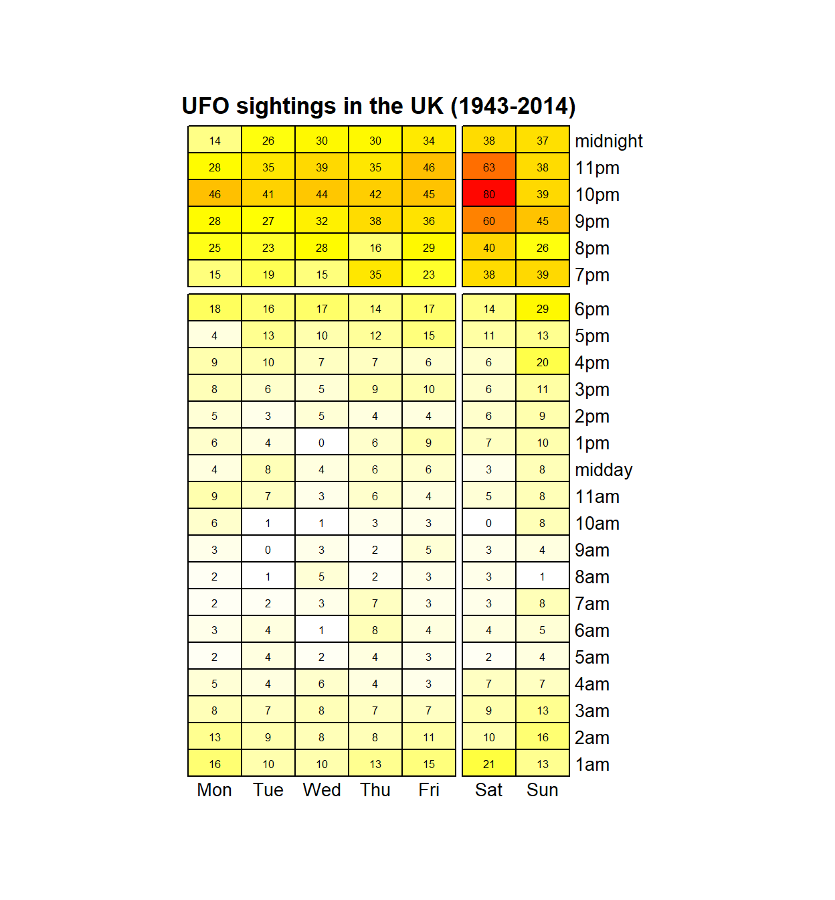

This script uses week 2019-26 TidyTuesday dataset on UFO sightings around the world, extracting the UK sightings to create a heatmap of the number of UFO sightings in the UK for each day of the week. I was also going to produce a static map to plot the UFO sightings, finding a useful UK basemap from the rnaturalearth package but in the end didn’t get round to finishing it. The code with the UK base map is there in case it is useful in the future!
library(tidyverse)
library(lubridate)
library(magrittr)
library(pheatmap)
library(RColorBrewer)
ufo_sightings_raw <- readr::read_csv("https://raw.githubusercontent.com/rfordatascience/tidytuesday/master/data/2019/2019-06-25/ufo_sightings.csv")First of all I am only interested in UFO sightings in the UK. Filtering on the city_area field produces more sightings than using the country field.
ufo_sightings_uk <- ufo_sightings_raw %>%
filter(str_detect(city_area, "uk/"))This leaves us with 2,354 sightings. I am interested in counting the number of hourly sightings for each day, across all years so need to use the date_time column to extract days and hour columns.
I couldn’t find a quick way of converting the hours to 12 hour labels and resorted to using lubridate’s am and pm functions, addeing the midnight and midday labels afterwards.
Note I also set the start of the week as Monday rather than Sunday so that Sunday occurs at the end of the week.
ufo_sightings_uk_counts <- ufo_sightings_uk %>%
transmute(date_time = parse_date_time(date_time, "mdy HM")) %>%
mutate(hour = case_when(
am(date_time) ~ str_glue("{hour(date_time)}am"),
pm(date_time) ~ str_glue("{hour(date_time) -12}pm"),
TRUE ~ NA_character_
)) %>%
mutate(hour = as.character(hour)) %>%
mutate(hour = case_when(
hour == "0am" ~ "midnight",
hour == "0pm" ~ "midday",
TRUE ~ hour
)) %>%
mutate(weekday = wday(date_time, label = TRUE,
week_start = 1)) %>% # set Monday as the start of the week
select(-date_time)Now to count the number of UFO sightings per hour for each weekday and spread dataset by weekdays
ufo_sightings_uk_counts <- ufo_sightings_uk_counts %>%
group_by_all() %>%
tally(name = "ufo_sightings") %>%
ungroup()
ufo_sightings_uk_counts <- ufo_sightings_uk_counts %>%
spread(weekday, ufo_sightings, fill = 0L) %T>%
glimpse()
Observations: 24
Variables: 8
$ hour <chr> "10am", "10pm", "11am", "11pm", "1am", "1pm", "2am",...
$ Mon <int> 6, 46, 9, 28, 16, 6, 13, 5, 8, 8, 5, 9, 2, 4, 3, 18,...
$ Tue <int> 1, 41, 7, 35, 10, 4, 9, 3, 7, 6, 4, 10, 4, 13, 4, 16...
$ Wed <int> 1, 44, 3, 39, 10, 0, 8, 5, 8, 5, 6, 7, 2, 10, 1, 17,...
$ Thu <int> 3, 42, 6, 35, 13, 6, 8, 4, 7, 9, 4, 7, 4, 12, 8, 14,...
$ Fri <int> 3, 45, 4, 46, 15, 9, 11, 4, 7, 10, 3, 6, 3, 15, 4, 1...
$ Sat <int> 0, 80, 5, 63, 21, 7, 10, 6, 9, 6, 7, 6, 2, 11, 4, 14...
$ Sun <int> 8, 39, 8, 38, 13, 10, 16, 9, 13, 11, 7, 20, 4, 13, 5...The data frame is now in the format needed to produce a heatmap, apart from the ordering of the hours is not what I would like
To order the row going upwards from 1am to midnight I converted the hour column to an orderd factor giving the required order. To make midnight the first row I then had to reverse the order!
hour_order <- c("1am", "2am", "3am", "4am", "5am", "6am", "7am", "8am",
"9am", "10am", "11am", "midday",
"1pm", "2pm", "3pm", "4pm", "5pm", "6pm", "7pm", "8pm",
"9pm", "10pm", "11pm", "midnight")
ufo_sightings_uk_counts <- ufo_sightings_uk_counts %>%
mutate(hour = factor(hour, levels = hour_order)) %>%
mutate(hour = fct_rev(hour)) %>%
arrange(hour)Now to create the heatmat using the pheatmap package. To make the hours with the highest number of sightings look hotter I defined my own color palatte using the RColorBrewer package. With increasing sightings the palette goes from white, through yellow and orange to red having the highest number of sightings.
heatmap_palette <- colorRampPalette(c("white", "yellow", "orange", "red"))(n = 77)
palette_breaks <- c(seq(0, 10, length = 10),
seq(11, 30, length = 19),
seq(31, 55, length = 24),
seq(56, 80, length = 24))
ufo_matrix <- data.matrix(ufo_sightings_uk_counts)[, -1]
rownames(ufo_matrix) <- ufo_sightings_uk_counts$hour
ufo_uk_sightings <- pheatmap(mat = ufo_matrix,
cluster_row = FALSE, cluster_cols = FALSE,
display_numbers = TRUE, number_format = "%.0f",
fontsize_number = 6, number_color = 'black',
angle_col = 0,
cellheight = 15, cellwidth = 30,
gaps_row = 6, gaps_col = 5,
border_color = 'black',
col = heatmap_palette,
breaks = palette_breaks,
legend = FALSE,
main = "UFO sightings in the UK (1943-2014)")
It appears that aliens are more likely to want to visit the UK for a night out, especially on a Saturday night. Look out for unexplained flying objects when you are next on a night out!
Finally lets save the heatmap as a png image.
save_pheatmap <- function(x, filename, width = 1000, height = 1000, res = 150) {
png(filename, width = width, height = height, res = res)
grid::grid.newpage()
grid::grid.draw(x$gtable)
dev.off()
}
save_pheatmap(ufo_uk_sightings, "ufo_uk_sightings.png")
png
2 So where in the UK is a good place to go on a Saturday night to meet up with extra terrestrials?
Fortunately all the sightings are associated with a latitude and longitude reference point so each UFO sighting can be plotted on map.
library(sf)
library(tmap)First lets add the hour and weekday back into the UK UFO sightings dataframe and convert it into a spatial dataframe using the sf package. This spatial dataframe can then be split into a Saturday evening and not Saturday evening spatial dataframe and plotted on an interactive leaflet map using the view mode of tmap package
ufo_sightings_uk_spatial <- ufo_sightings_uk %>%
mutate(date_time = parse_date_time(date_time, "mdy HM")) %>%
mutate(hour = case_when(
am(date_time) ~ str_glue("{hour(date_time)}am"),
pm(date_time) ~ str_glue("{hour(date_time) -12}pm"),
TRUE ~ NA_character_
)) %>%
mutate(hour = as.character(hour)) %>%
mutate(hour = case_when(
hour == "0 am" ~ "midnight",
hour == "0 pm" ~ "midday",
TRUE ~ hour
)) %>%
mutate(weekday = wday(date_time, label = TRUE,
week_start = 1)) %>%
select(-state, -country) %>%
st_as_sf(coords = c("longitude", "latitude"),
crs = "+proj=longlat +datum=WGS84")Adding the Saturday evening UFO sightings (red points) and UFO sightings at other times (grey points) shows that they are widely scattered through England, Wales and Southern Scotland. We shall ignore the few points lying outside the UK!
evening <- c("7pm", "8pm", "9pm", "10pm", "11pm", "midnight")
saturday_evening <- ufo_sightings_uk_spatial %>%
filter(hour %in% evening & weekday == "Sat")
not_saturday_evening <- ufo_sightings_uk_spatial %>%
filter(!hour %in% evening & weekday != "Sat")
tm <- tm_shape(not_saturday_evening) +
tm_dots(col = "grey") +
tm_shape(saturday_evening) +
tm_dots(col = "red")
# create a leaflet map with UK view restricting min and max
# zoom levels and boundary limits
tmap_mode("view")
tm + tm_view(basemaps = "OpenStreetMap",
set.view = c(-3L, 55L, 5L),
set.bounds = c(-10.85, 49.82, 2.02, 59.47),
set.zoom.limits = c(4L, 12L)
)Initially I was going to produce a static map to plot the UFO sightings and found a useful UK basemap from the rnaturalearth package. In the end I did’t use this layer but it may be useful in the future!
library(rnaturalearth)
base_map_uk <- ne_countries(type = "countries", country = "united kingdom",
scale = "large", returnclass = "sf")